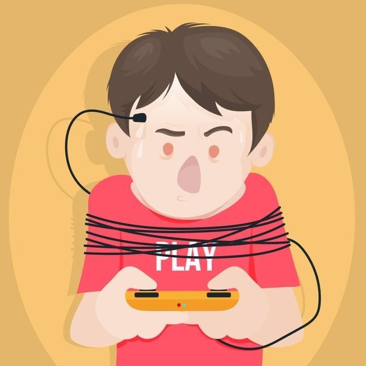
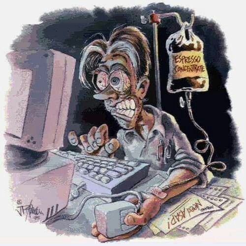

Oyun Bağımlılığı hedefleri

- Zaman yönetimini iyileştirmek: Günlük yaşamı aksatacak ölçüde oyun oynama süresini azaltmak ve diğer sorumluluklara zaman ayırabilmek.
- Akademik/iş performansını korumak veya artırmak: Ders, iş, sosyal etkinlik, uyku gibi alanlardaki verim düşüşünün önüne geçmek.
- Psikolojik sağlığı desteklemek: Stres, yalnızlık, kaygı gibi duyguların oyunla değil, daha sağlıklı baş etme yöntemleriyle yönetilmesi.
- Fiziksel sağlığı korumak: Hareketsizlik, uyku düzensizliği, beslenme bozukluğu gibi risklerin azaltılması.
- Sosyal ilişkileri güçlendirmek: İzolasyonun önüne geçmek, aile ve arkadaşlarla daha nitelikli zaman geçirmek.
- Dijital farkındalık geliştirmek: Oyun tüketimini fark ederek bilinçli seçimler yapabilmek.
- Özerklik ve öz denetim kazanmak: Oyunun “zorlayıcı” değil “kontrollü ve keyifli” bir aktivite haline gelmes
Oyun bağımlılığının önüne geçmenin temel hedefi, kişinin oyunla kurduğu ilişkiyi sağlıklı, dengeli ve yaşamı destekleyici bir seviyeye çekmektir. Hedeflerimiz Şunlarıdır:
Kısacası amaç, oyunu tamamen hayat dışına itmek değil; kişinin yaşam kalitesini artıracak sağlıklı bir denge kurmasını sağlamaktır.
Sağlık ve İyi Olma Hali
SKA 3, bireylerin fiziksel, ruhsal ve sosyal açılardan iyi olma halini destekleyen bütüncül bir yaklaşımı ifade eder. Oyun bağımlılığı, yalnızca fizyolojik etkileri olan bir davranış bozukluğu değil; aynı zamanda bireyin ruh sağlığını, akademik/mesleki performansını, sosyal ilişkilerini ve yaşam doyumunu olumsuz yönde etkileyebilen bir risk alanıdır. Bu hedef doğrultusunda, sürdürülebilir bir iyi olma hali için sağlıklı dijital alışkanlıkların geliştirilmesi, öz-düzenleme becerilerinin güçlendirilmesi, ve dijital ortamların birey üzerinde yarattığı psikososyal yükün azaltılması önem kazanmaktadır.
Oyun kullanımına yönelik bilinçli farkındalık oluşturmak, bireylerin hem kişisel işlevselliğini hem de toplumsal katılımını destekleyerek daha kapsayıcı, sağlıklı ve üretken bir yaşam sürmelerine katkı sağlar. Proje, bu çerçevede genç bireyleri güçlendiren, bağımlılık riskini azaltan ve ruhsal iyilik halini artıran önleyici müdahalelere odaklanmaktadır.

Projemizin Somut Hedefleri
Bu web sitesi ve farkındalık kampanyamız ile ulaşmak istediğimiz somut sonuçlar:
- Farkındalık Yaratmak: Oyun bağımlılığının bir 'hobi' değil, bir sağlık sorunu olabileceği bilincini yerleştirmek.
- Bilgilendirme Merkezi Olmak: Üniversite öğrencilerine, ailelere ve akademisyenlere doğru, bilimsel kaynaklara dayalı bilgi sunmak.
- Destek Mekanizmalarına Yönlendirme: Yardıma ihtiyacı olanları üniversite danışmanlık merkezlerine, Yeşilay veya psikologlara yönlendiren bir köprü kurmak.
- Gerçek Hayat Aktivitelerini Teşvik: Öğrencileri, sosyal kulüpler, spor ve kültürel etkinlikler gibi oyun dışı, sağlıklı hobilere yönlendirmek.